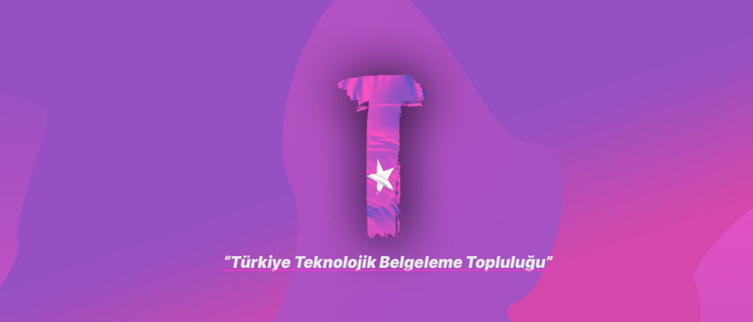

Türkiye Teknolojik Belgeleme Topluluğu
 Türkiye Teknolojik Belgeleme Topluluğu ya da TTBT, teknoloji alanındaki Türkçe belgelerin kapsamını genişletmek için oluşturulan bir topluluktur.
Lütfen katkıda bulunmadan önce aşağıdaki bağlantıları inceleyin:
Katkıcı Ahdi Topluluk Sözleşmesi
Taahhüdümüz
Herkes için açık ve erişilebilir bir ortam sağlamak amacıyla üyeler, katkıda bulunanlar ve liderler olarak biz katkı vermeyi yaş, beden ölçüsü, görünür veya görünmez sakatlık, etnik köken, cinsiyet özellikleri, cinsiyet kimlik ve ifadesi, tecrübe seviyesi, eğitim, sosyo-ekonomik durum, milliyet, kişisel görünüm, ırk, din veya cinsel kimlik ve yönelim ayrımı gözetmeden keyifli ve güvenli bir tecrübe haline getirmeyi taahhüt ediyoruz.
Açık, misafirperver, çeşitliliği destekleyen, kapsayıcı ve sağlıklı bir topluluk oluşturacak şekilde hareket etmeyi ve etkileşim kurmayı taahhüt ediyoruz.
Standartlarımız
Bizim için olumlu bir topluluk ortamına katkıda bulunan davranış örnekleri şunları içerir:
- Diğer insanlara karşı empati ve nezaket göstermek
- Farklı görüşlere, bakış açılarına ve deneyimlere saygılı olmak
- Yapıcı geri bildirim verme ve geri bildirimi zarifçe kabul etme
- Sorumluluğu kabul etmek ve hatalarımızdan etkilenenlerden özür dilemek, ve bu deneyimlerden öğrenme
- Sadece kendimiz için değil, topluluk için en iyi olana odaklanmak
Kabul edilemez davranış örnekleri şunları içerir:
- Cinselleştirilmiş dil veya imgelerin ve cinsel ilgi veya her türlü cinsel avantajın kullanımı
- Trolleme, hakaret veya aşağılayıcı yorumlar ve kişisel veya politik saldırılar
- Açıktan veya gizli taciz
- Açık izinleri olmadan fiziksel adresleri veya e-posta gibi başkalarının özel bilgilerini yayınlama
- Profesyonel bir ortamda makul sayılmayabilecek diğer davranışlar
Uygulama Sorumlulukları
Topluluk liderleri, kabul edilebilir davranış standartlarımızı açıklamaktan ve uygulamaktan sorumludur ve uygunsuz, tehdit edici, saldırgan veya zararlı gördükleri davranışlara karşılık olarak uygun ve adil düzeltici önlemler alacaktır.
Topluluk liderleri, bu Davranış Kurallarına uymayan yorumları, commit'leri, kodları, wiki düzenlemelerini, sorun kayıtlarını ve diğer katkıları kaldırma, düzenleme veya reddetme hakkına ve sorumluluğuna sahiptir ve gerektiğinde denetleme kararlarının nedenlerini bildirir.
Kapsam
Bu Davranış Kuralları tüm topluluk alanlarında geçerlidir ve ayrıca bir kişinin topluluğu kamuya açık alanlarda resmi olarak temsil ettiğinde de geçerlidir. Topluluğumuzu temsil etmenin örnekleri arasında resmi bir e-posta adresi kullanmak, resmi bir sosyal medya hesabı aracılığıyla yayınlamak veya çevrimiçi veya çevrimdışı bir etkinlikte atanmış bir temsilci olarak hareket etmek yer alır.
Uygulama
Zorbalık, taciz edici veya başka bir şekilde kabul edilemez davranış örnekleri sorumlu topluluk liderlerine bildirilebilir. Tüm şikayetler derhal ve adil bir şekilde incelenecek ve araştırılacaktır.
Tüm topluluk liderleri, herhangi bir olayın şikayetçisinin gizliliğine ve güvenliğine saygı göstermekle yükümlüdür.
Uygulama Yönergeleri
Topluluk liderleri, bu Davranış Kurallarını ihlal ettiklerini düşündükleri herhangi bir eylemin sonuçlarını belirlerken bu Topluluk Etki Kurallarını izleyeceklerdir:
1. Düzeltme
Topluluk Etkisi: Toplulukta profesyonel olmayan veya hoş karşılanmadığı kabul edilen uygunsuz dil veya diğer davranışların kullanılması.
Sonuç: Topluluk liderlerinden kişiye ihlalin niteliği ve davranışın neden uygunsuz olduğuna dair açıklama sağlayan özel, yazılı bir uyarı gönderilir. Kişiden kamuya açık bir özür talep edilebilir.
2. Uyarı
Topluluk Etkisi: Tek bir veya bir dizi olayda ihlal.
Sonuç: Davranış sürekliliği için sonuçları belirten bir uyarı. Belirli bir süre için Davranış Kurallarını uygulayanlarla istenmeyen etkileşim dahil, olaya dahil olan kişilerle etkileşim yasağı getirilir. Bu, sosyal medya gibi dış kanalların yanı sıra topluluk alanlarında etkileşimden uzaklaştırılmayı içerir. Bu şartları ihlal etmek geçici veya kalıcı bir yasaklamaya yol açabilir.
3. Geçici Yasak
Topluluk Etkisi: Sürekli uygunsuz davranış da dahil olmak üzere, topluluk standartlarının ciddi bir ihlali.
Sonuç: Belirli bir süre boyunca toplulukla her türlü etkileşimden veya halkla iletişimden geçici olarak yasaklanma. Davranış Kurallarını uygulayanlarla istenmeyen etkileşim dahil, ilgili kişilerle hiçbir kamusal veya özel etkileşime izin verilmez. Bu şartları ihlal etmek kalıcı bir yasağa yol açabilir.
4. Kalıcı Yasak
Topluluk Etkisi: Sürekli uygunsuz davranışlar, bir bireyin taciz edilmesi veya bireylerin sınıflarına karşı saldırganlık veya aşağılama dahil olmak üzere, topluluk standartlarının ihlalinde devamlılık göstermek.
Sonuç: Topluluk içindeki her türlü açık etkileşimden kalıcı bir yasak.
Kaynak
Bu Davranış Kuralları Katılımcı Sözleşmesinden uyarlanmıştır, sürüm 2.0'a şu adresten ulaşılabilir: https://www.contributor-covenant.org/version/2/0/code_of_conduct.html.
Topluluk Etki Yönergeleri Mozilla'nın davranış kuralları icra merdiveninden ilham alındı.
Bu davranış kuralları hakkında sık sorulan soruların yanıtları için https://www.contributor-covenant.org/faq adresindeki SSS bölümüne bakın. Çevirilere https://www.contributor-covenant.org/translations adresinden ulaşabilirsiniz.